Precision yield monitor for almond and pistachio
The lab is developing yield monitoring for almond and pistachio at the scale of a single tree. Support includes the Almond Board of California and the California Department of Food and Agriculture Fertilizer Research and Education Program. The faculty project page published the work as the slide set below. Team listed on the title slide: Stavros Vougioukas (PI), Juan Fernando Villacrés (post-doctoral researcher), and Dennis Sadowski (R&D engineer).

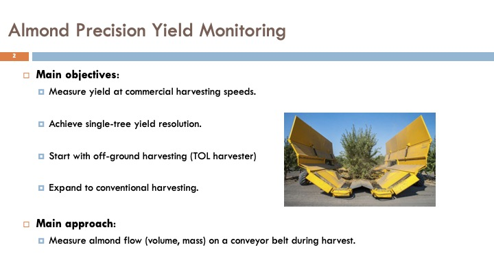
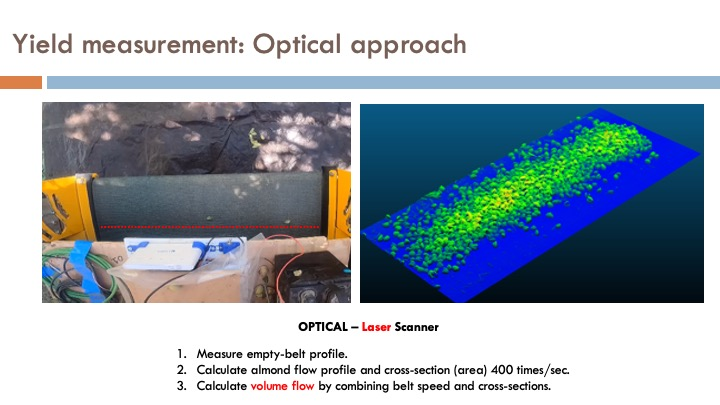
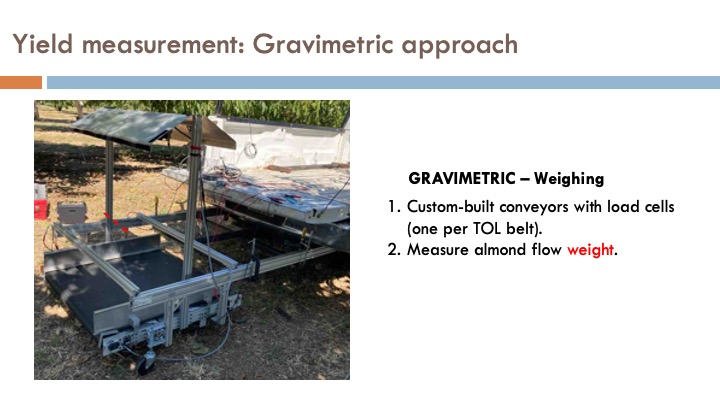

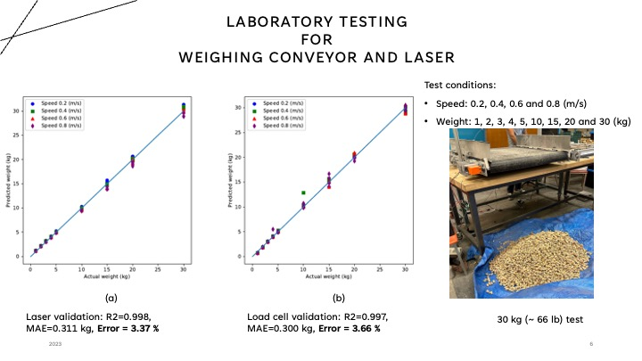
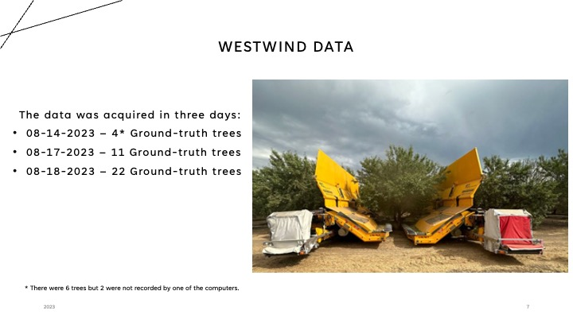
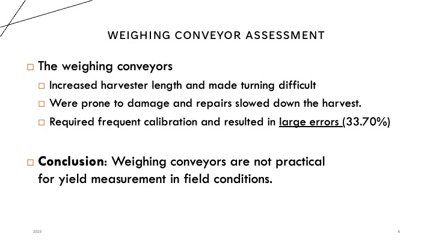
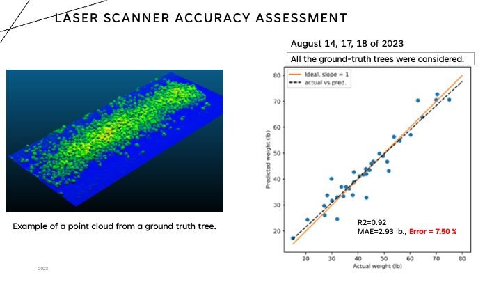
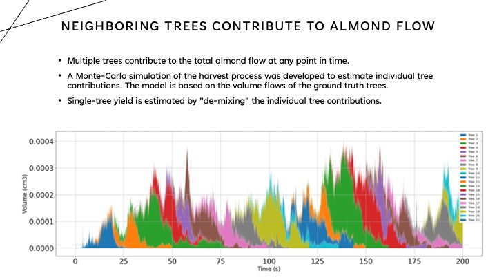
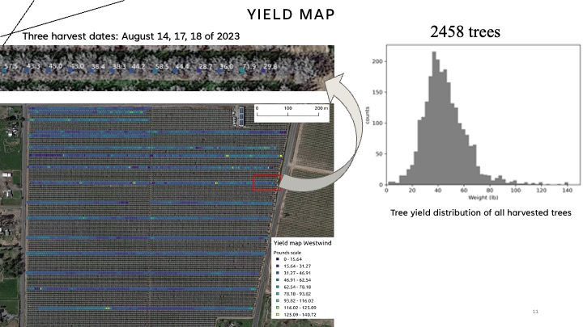
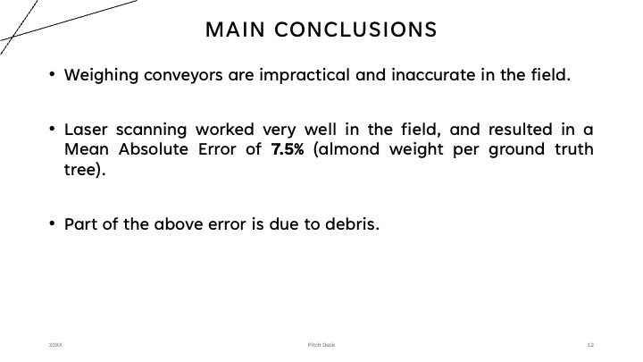
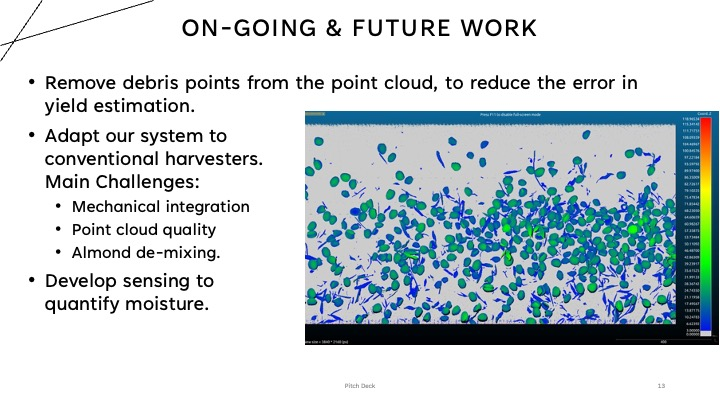